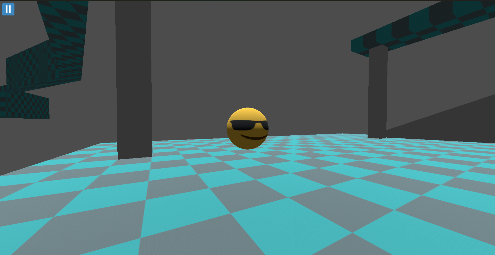

Recently finished
Raytracing with non photorealism

I created a pathtracer which can produce artistic effects during rendering. This project is an adaptation of an tutorial by Peter Shirley
Motivated software engineering graduate with strong programming skills in C++, C# and Javascript, as well as knowledge in Java, MySQL, Node.js and Vue.js. Skilled in designing, developing, and testing software solutions with a focus on writing clean, efficient, and maintainable code. Strong problem solving mindset, collaborative team player, and eager to contribute technical expertise and innovative thinking to software development projects.
I created a pathtracer which can produce artistic effects during rendering. This project is an adaptation of an tutorial by Peter Shirley

A challenging game built in Godot C# where you play as a ball and navigate through obstacles. Balls2 was made to learn more about the Godot game engine. It also allowed me to understand more about the process of making a game from concept to beyond publishing.
Sept 2022 - Sept 2025
Grade: First class